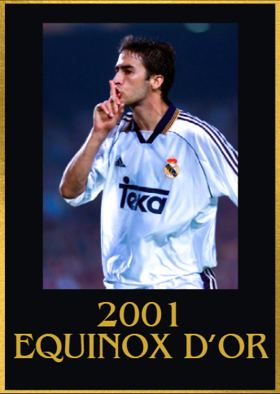
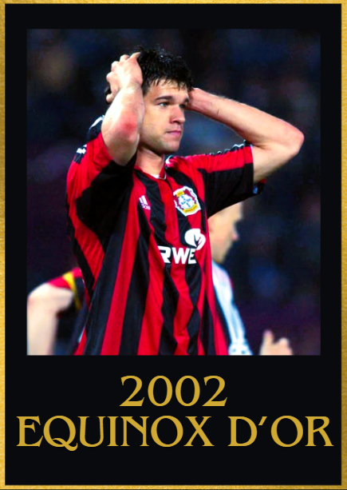
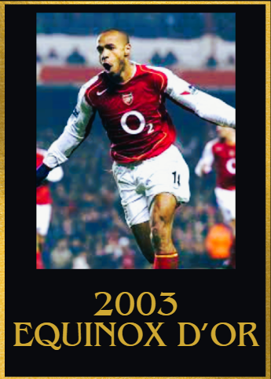
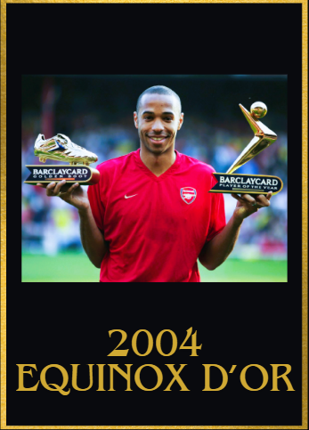
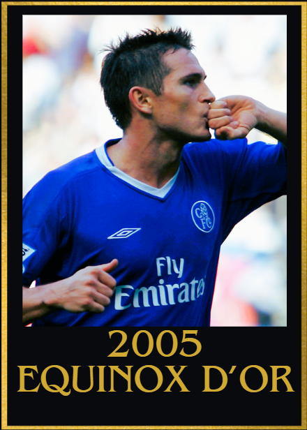
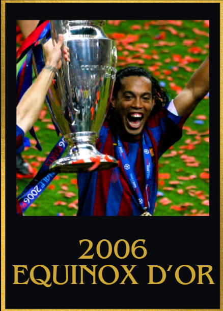
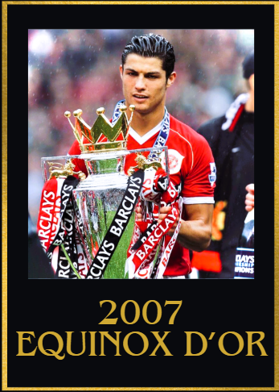
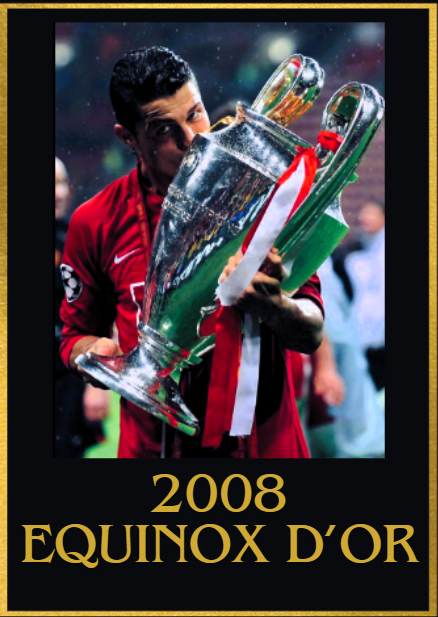
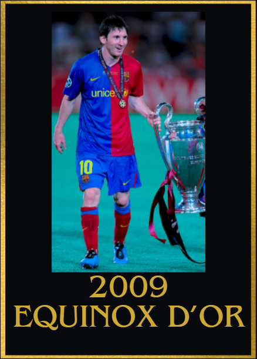

2000s Equinox d'Or Winners
2000
1st: Zinedine Zidane 🇫🇷 Juventus
2nd: Thierry Henry 🇫🇷 Arsenal
3rd: Alessandro Nesta 🇮🇹 Lazio
4th: Luis Figo 🇵🇹 Barcelona/Real Madrid
5th: Rivaldo 🇧🇷 Barcelona

Achievements
- 24 goal contributions
- Euros Winner
- Euros best player
Key Moments
- Master classes in the euros semi-final and quarter finalS vs Spain and Portugal
- MOTM vs Denmark
- Hat trick of assists vs Espanyol
- 2 goal contributions vs Lazio in the coppa italia
- Assist in the UEFA Champions League vs hamburg
- 4 goal contributions in his opening 3 Serie a games in 2000/01 (inclduing Napoli and Milan)
- 2 goal contributions vs Inter Milan
- Cluth goal vs Hellas Verona
2001
1st: Raul Gozalez 🇪🇸 Real Madrid
2nd: Oliver Kahn 🇩🇪 Bayern München
3rd: Luis Figo 🇵🇹 Real Madrid
4th: David Beckham 🏴 Manchester United
5th: Michael Owen 🏴 Liverpool

Achievements
- 58 goal contributions
- UEFA champions league semi finalist
- UEFA Champions league top scorer
- La liga champion
- Copa del rey top scorer
Key Moments
- 3 goal contributions vs Galatasaray in the UEFA champions league quarter finals
- Goal vs Bayern München in the UEFA champions league semi finals
- Brace vs Malaga, Barcelona, Zaragoza, Alaves, Valladolid, Anderlecht and Panathinaikos
- Hat-trick vs Real Zaragoza in the Supercopa de España final
- Hat trick vs Gimnàstic in the copa del rey
2002
1st: Michael Ballack 🇩🇪 Bayer 04 Leverkusen/ Bayern München
2nd: Oliver Kahn 🇩🇪 Bayern München
3rd: Raul Gonzalez 🇪🇸 Real Madrid
4th: Roberto Carlos 🇧🇷 Real Madrid
5th: Zinedine Zidane 🇫🇷 Real Madrid

Achievements
- 43 goal contributions as a CAM/CM
- World Cup runner up
- UEFA Champions league runner up
- Bundesliga runner up
Key Moments
- 2 goal contributions vs Kaiserslautern in the bundesliga
- Brace vs Liverpool in the UEFA Champions league
- Goal vs Manchester United in the UEFA Champions semi finals
- 2 goal contributions vs Deportiva La coruna
- 3 goal contributions vs Saudi Arabia in the world cup
- 2 decisive goals in the world cup quarters and semi finals to send Germany to the World cup final
- Brace vs Nürnberg
- 2 assists vs Hannover 96 in the DFB Pokal
2003
1st: Thierry Henry 🇫🇷 Arsenal
2nd: Zinedine Zidane 🇫🇷 Real Madrid
3rd: Paolo Maldini 🇮🇹 AC Milan
4th: Pavel Nedved 🇨🇿 Juventus
5th: Ruud Van Nistelrooy 🇳🇱 Manchester United

Achievements
- Confederations cup winner
- 75 goal contributions
- FA Cup winner
Key Moments
- 4 goal contributions vs Inter Milan
- Hat trick of assists vs Birmingham
- 1 goal and a hat-trick of assists vs Sunderland
- Hat trick vs West Ham United
- Brace vs Manchester United
- 2 goal contributions vs Chelsea
- Clutch match winning goal vs Chelsea
- Goal vs Manchester United in the community shield final
2004
1st: Thierry Henry 🇫🇷 Arsenal
2nd: Andriy Shevchenko 🇺🇦 AC Milan
3rd: Adriano 🇧🇷 Inter Milan
4th: Deco 🇵🇹 Porto
5th: Ronaldinho 🇧🇷 Barcelona

Achievements
- 65 goal contributions
- Premier league winner(as an invincible)
- Euros quarter finalist
- Premier league top scorer
- Premier league player of the season award
Key Moments
- 10 goal contributions in his opening 4 games in the 2004-05 prem
- 2 goals and 1 assist vs Middelsbrough, and 1 goal and 2 assists vs Norwich
- Decisive brace vs Chelsea
- Brace vs Switzerland in the euros
- Poker vs Leeds United
- A hat trick vs Liverpool
- 3 goal contributions vs Celta Vigo in the UEFA Champions league quarter finals
2005
1st: Frank Lampard 🏴 Chelsea
2nd: Ronaldinho 🇧🇷 Barcelona
3rd: Steven Gerrard 🏴 Liverpool
4th: Andriy Shevchenko 🇺🇦 AC Milan
5th: Paolo Maldini 🇮🇹 AC Milan

Achievements
- 48 goal contributions as a CM
- Premier League winner
- UEFA Champions League semi finalist
- EPL Player of the season
- EFL cup winner
Key Moments
3 goal contributions vs Bayern in the UEFA Champions League semi finals
Brace vs Bolton Wanderers, West Brom and Aston villa
4 goal contributions vs Bolton Wanderers
3 goal contributions vs Blackburn Rovers
2 assists vs Norwich city
Crucial match winning Goal vs Manchester united in the EFL cup semi final
Crucial goal vs Manchester United to seal the premier league win for Chelsea
2006
1st: Ronaldinho 🇧🇷 Barcelona
2nd: Andrea Pirlo 🇮🇹 AC Milan
3rd:Gianluigi Buffon 🇮🇹 Juventus
4th: Thierry Henry 🇫🇷 Arsenal
5th: Fabio Cannavaro 🇮🇹 Juventus

Achievements
- UEFA Champions League Winner
- La liga winner
- Club world cup finalist
- 50 goal contributions
- Supercopa de España
Key Moments
- 3 goal contributions vs Real Zaragoza, Real Betis and Deportivo La Coruna
- Brace vs Villarreal and Sevilla
- Game winning assist vs AC Milan in the UEFA champions league semi final
- 2 goal contributions vs Chelsea in the UEFA Champions league
2007
1st: Cristiano Ronaldo 🇵🇹 Manchester United
2nd: Ricardo Kaka 🇧🇷 AC Milan
3rd: Francesco Totti 🇮🇹 AS Roma
4th: Andrea Pirlo 🇮🇹 AC Milan
5th: Didier Drogba 🇨🇮 Chelsea

Achievements
- Premier League POTY
- UEFA champions league semi finalist
- Premier league winner
- Most goal contributions in the UCL (2007 calendar year)
- Most goals in the UCL (2007 calendar year)
- 45 goal contributions
Key Moments
- 10/10 rating vs Roma in the UEFA Champions League quarter final (with 3 goal contributions)
- 1 goal vs AC Milan in the UEFA Champions League Semi finals
- Crucial assist vs Lille in the UEFA Champions league knockouts
- 3 goal contributions vs Belgium
- 2 goal contributions vs Spurs
- 2 assists vs Bolton Wanderers
- Brace vs Everton
- Crucial equaliser vs Arsenal
2008
1st: Cristiano Ronaldo 🇵🇹 Manchester United
2nd: Xavi Hernández 🇪🇸 Barcelona
3rd: Fernando Torres 🇪🇸 Liverpool
4th: Iker Casillas 🇪🇸 Real Madrid
5th: Lionel Messi 🇦🇷 Barcelona

Achievements
- 47 goal contributions
- UEFA champions league winner
- UEFA Player of the season
- UEFA Champions league top scorer
- European golden shoe
- Premier league winner
- Community shield winner
- Club world cup winner
- Premier league player of the season
Key Moments
- Goal vs Chelsea in the UEFA champions league final
- 3 goal contributions vs West Ham United, Newcastle United and Stoke City
- 1 goal and 3 assists vs Aston Villa
- Hat trick vs Newcastle United
- 2 goal contributions vs Czech Republic
2009
1st: Lionel Messi 🇦🇷 Barcelona
2nd: Xavi Hernández 🇪🇸 Barcelona
3rd: Cristiano Ronaldo 🇵🇹 Manchester United
4th: Andres Iniesta 🇪🇸 Barcelona
5th: Samuel Eto'o 🇨🇲 Barcelona/Inter Milan

Achievements
- Sextuple winner(UEFA Champions league + La liga + Copa del Rey + Supercopa de España + Club world cup + UEFA Super cup winner)
- La Liga Player of the season
- UEFA champions league top scorer
- 56 Goal contributions
- UEFA player of the season
Key Moments
- Scored a header vs Manchester united in the 2009 UEFA Champions League final
- 3 goal contributions vs Bayern München, Real Madrid, Atletico Madrid and Racing Santander
- Hat trick vs Atletico Madrid
- 2 goal contributions vs Athletic Bilbao in Copa del Rey final
- Brace vs Athletic Bilbao in supercopa de españa final
- Game winning goal vs Estudiantes LP in club world cup final
- Game winning assist vs UEFA Super cup vs Shakthar Donetsk